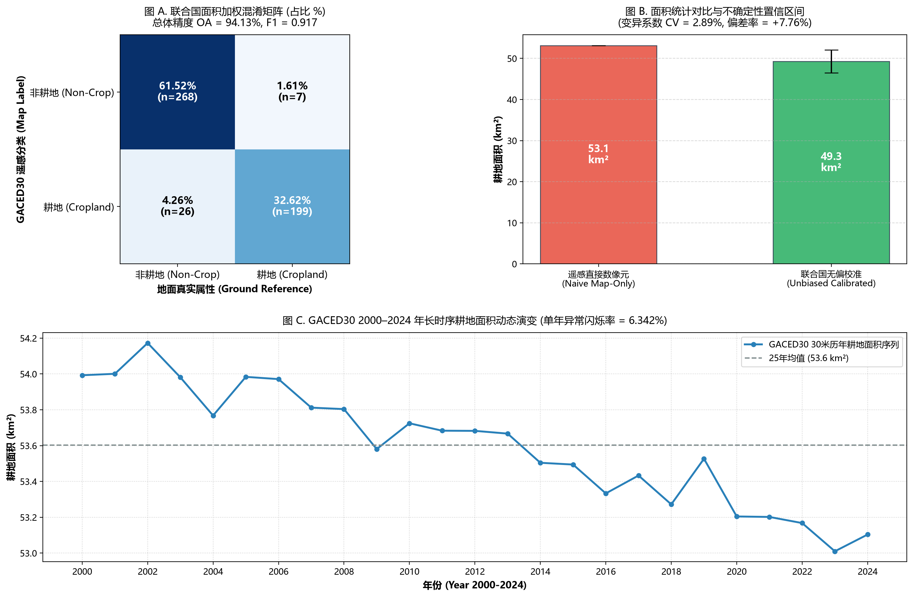

| 指标类别 | 指标名称 | 量化数值 | 解析标准差 (SE) | 联合国规范与合格门槛 |
|---|---|---|---|---|
| 全图精度 | 总体精度 (Overall Accuracy, OA) | 94.13% | ±0.99% | 推荐 ≥ 85.0% |
| 耕地精度 | 用户精度 (User's Accuracy, UA / 查准率) | 88.44% | ±2.14% | 虚报/错报率 (Commission) = 11.56% |
| 耕地精度 | 生产者精度 (Producer's Accuracy, PA / 查全率) | 95.31% | ±1.68% | 漏报/欠报率 (Omission) = 4.69% |
| 综合平衡 | F1-Score (调和综合指标) | 0.9175 | - | 推荐 ≥ 0.8500 |
| 几何重合 | 交并比 (Intersection over Union, IoU) | 0.8475 | - | 小农破碎带优良线 0.75~0.85 |
| 非耕地精度 | 非耕地用户精度 (Non-crop UA) | 97.45% | - | 背景大类识别查准率 |
| 非耕地精度 | 非耕地生产者精度 (Non-crop PA) | 93.52% | - | 背景大类识别查全率 |
| 统计参数 | 平方公里 (km²) | 中国市亩 (万亩) | 统计与决策说明 |
|---|---|---|---|
| 待验地图像元计数面积 (Naive Map Area) | 53.10 | 7.97 | 直接数像素面积 (存在系统误差) |
| 联合国无偏估计面积 (Unbiased Calibrated Area) | 49.28 | 7.39 | 消除漏报与错报后的真实统计基准 |
| 地图直接数像素系统偏差率 (Bias %) | +3.82 | +7.76% | 若为正表示虚高，若为负表示漏统 |
| 解析标准误 (Standard Error, SE) | ±1.43 | ±0.21 | Olofsson (2014) 分层抽样闭式解析方差 |
| 变异系数 (Coefficient of Variation, CV%) | 2.89% | 2.89% | 官方统计合规门槛: CV < 5% 极高可靠; CV < 10% 可用 |
| 95% 解析置信区间 (Analytical 95% CI) | [46.49 ~ 52.08] | [6.97 ~ 7.81] | A_hat ± 1.96 * SE |
| 95% Bootstrap 经验置信区间 | [46.45 ~ 52.17] | [6.97 ~ 7.83] | 2,000次重抽样交叉印证区间 |
| 地图预测 \ 地面真实 | 地面真实: 非耕地 (0) | 地面真实: 耕地 (1) | 地图面积比例 (Wi) | 用户精度 (UA) |
|---|---|---|---|---|
| 地图预测: 非耕地 (0) | 0.6152 (268) | 0.0161 (7) | 0.6312 | 97.45% |
| 地图预测: 耕地 (1) | 0.0426 (26) | 0.3262 (199) | 0.3688 | 88.44% |
| 真实无偏面积比例 (p_.j) | 0.6578 | 0.3422 | 1.0000 | OA=94.13% |
| 生产者精度 (PA) | 93.52% | 95.31% | - | F1=0.9175 |
